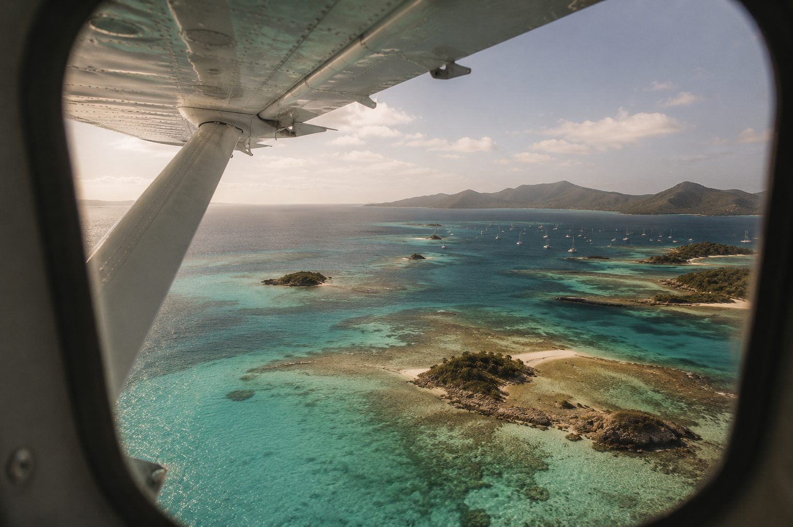
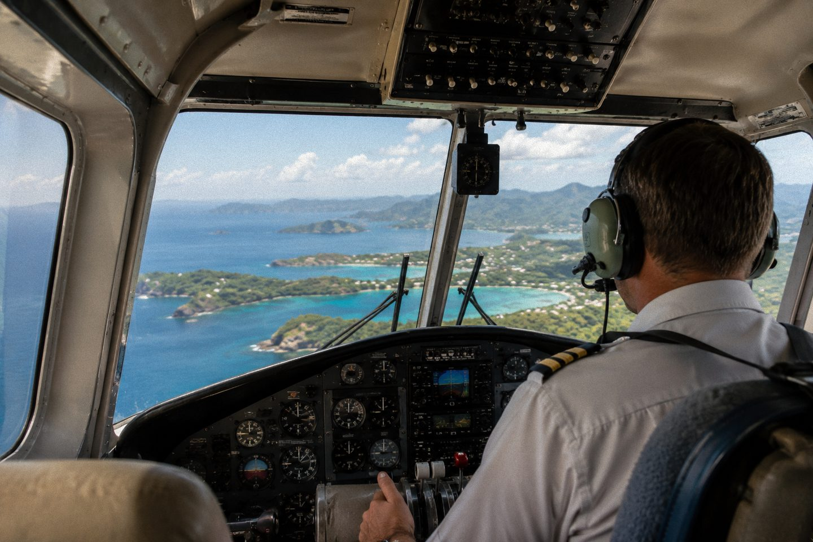
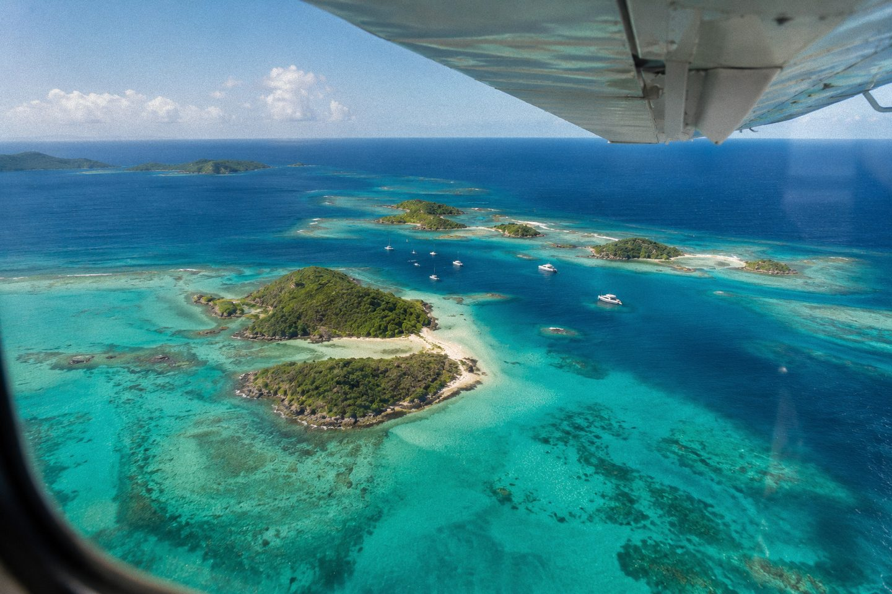
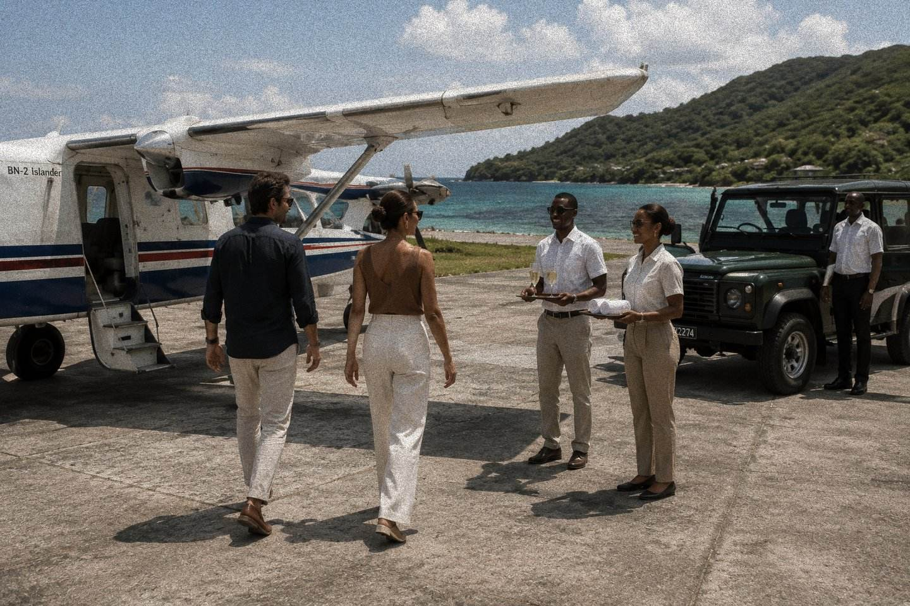

Some journeys begin long before you arrive.
There is a moment, shortly after take-off, when the islands begin to make sense. The coastline loosens into bays and headlands. Volcanic peaks rise above the clouds. Coral reefs appear beneath the surface like brushstrokes across the sea. One island becomes many, and many become a single archipelago. SALT Air was conceived around that moment: an invitation to understand Saint Vincent & the Grenadines from above before descending once more into its people, places and stories.
The Vision
An archipelago, read as one shape
SALT Air is a scenic aerial experience across Saint Vincent & the Grenadines. Seen from above, the relationship between sea, reef and land becomes legible in a way no map or itinerary quite captures on the ground.
Every island tells its own story. From the air, they begin to tell one another's.
The Flight
Ascend. Unfold. Return.

Saint Vincent falls away
Guests board a small aircraft near the coast. Within minutes, the island's own shape (mountain, bay, town, reef) becomes visible whole for the first time.

The islands, one after another
The heart of the flight: a low, unhurried pass across the Grenadines, tracing reef, channel and coastline as the archipelago reveals its own logic from above.

An arrival, not just a landing
The flight closes not with a return to routine, but a handover into whatever comes next: a Salt & Sorrel table, a SALT After Dark evening, or simply the rest of a private day.
For Hospitality Partners
A signature arrival. A memorable departure.
SALT Air is designed for properties that see the guest journey as beginning long before check-in and continuing long after departure. Whether offered as an arrival experience, a signature excursion or paired with another SALT experience, it extends the hospitality of the property into the wider landscape of Saint Vincent & the Grenadines.
Ways to offer SALT Air
- 01The Full Safari: a complete scenic flight across the Grenadines, paired with a SALT experience on arrival.
- 02Private Charter Add-On: a scenic routing arranged around an existing villa, yacht or hotel stay.
- 03A Signature Pairing: a shorter flight introducing a longer SALT day, such as Salt & Sorrel or SALT After Dark.
What SALT Air May Provide
- Concept and narration design
- Coordination with an aviation partner
- Guest briefing materials
- Pairing design with other SALT experiences
What a Partner May Provide
- Guest referral and concierge sales
- Ground transfer coordination
- Departure point or helipad access, where applicable
- Marketing support for a signature offering
Closing Vision
An archipelago worth reading from above
We welcome conversations with aviation, hospitality and destination partners.
Discuss a Hospitality Partnership